Site: https://cal-cs184-student.github.io/sp22-project-webpages-L-Jeon/proj3-2/index.html
Project Overview
In this project, we chose to implement mirror and glass materials (Part 1) and microfacet materials (Part 2). Since the purpose of modeling objects in this project is to make them look realistic, it follows that we base our calculations on real-world ones to mimic real-world behaviors… so long as it makes sense to do so.
To implement mirror and glass materials, we had to calculate reflected light rays and refracted ones based (unsurprisingly) on how they work in the real world. For microfacet materials, we approximate the micro level material's surface property at a macro level using statistics, with a few reasonable assumption to reduce the complexity of computation.
In implementing these various sections, we followed the instructions given in lecture and on the spec. As it's very math-intensive and we are not the ones deriving the formulae, a lot of this project consisted of crunching numbers and inputting them into said formulae. In doing this, we gained a great appreciation for the work that the mathematic and scientific community have done so we can render metal dragons and glass spheres in our tri-color, five-walled boxes.
(Surely, this is all as Newton and his predecessors intended their formulae to be used: to power our god complexes through great difficulty as we wonder why the eta term they've provided isn't working in our code before realizing we were calling the wrong variable, n, which is not eta, in its place this entire time. It would seem omnipotence is useless without the knowledge to wield it…)
Part 1: Mirror and Glass Materials
Implementation Overview
In order to render mirror and glass materials properly, our renderer needs to know how to calculate reflections and refractions. In BSDF::reflect() we take the input vector and reflect it about its normal, storing the reflected vector in wo. To calculate a light ray traveling through glass (refraction), we use Snell's Law and the Law of Refraction as covered in lecture to calculate wo.
For mirrors, we call BSDF::reflect(), passing in wo, wi to obtain wo's reflected ray in wi, set the pdf to 1 (as all the radiance reflects to one direction), and return reflectance / abs_cos_theta(*wi) (as specified in the project specifications). We do this to cancel out the cosine value that at_least_one_bounce_radiance will multiply MirrorBSDF::sample_f() by.
In the case of rendering glass, we have two primary ray occurences to look out for: if the ray of light get reflected on the surface of the object it has hit or it refracts through said surface. The reflected scenario is straightforward: we just reflect the ray. Refraction, however, is more complex.
For refraction, we use Snell's Law to find the refraction angle of the ray given the index of refraction, which is changed based on if the ray is entering or leaving the surface. While considering this, we also have to keep in mind a special case where total internal reflection occurs under certain angles, in which case we discard the refraction operation altogether.
Once we have our refraction function, we use Russian Roulette and coin_flip(R) to determine if the ray will be reflected or refracted. The probability, R, is based on the Fresnel equation, using Schlick's approximation. If our coin comes up heads (true) or total internal reflection occurs we reflect the ray and set the pdf to be R. We then return R * reflectance / abs_cos_theta(*wi), dividing by abs_cos_theta for the same reason as in mirrorBSDF::sample_f(). Otherwise, we refract it, set the pdf to be 1 - R, and return (1-R) * transmittance / abs_cos_theta(*wi) / eta^2.
Show a sequence of six images of scene CBspheres.dae rendered with max_ray_depth set to 0, 1, 2, 3, 4, 5, and 100. The other settings should be at least 64 samples per pixel and 4 samples per light.
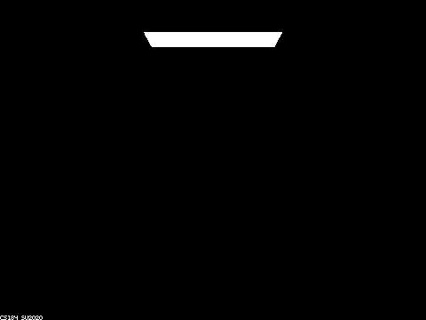
max_ray_depth = 0 |
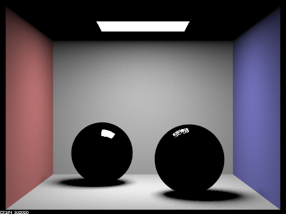
max_ray_depth = 1 |
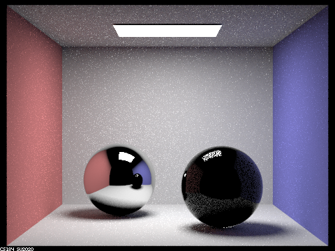
max_ray_depth = 2 |
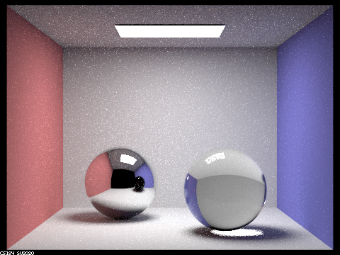
max_ray_depth = 3 |
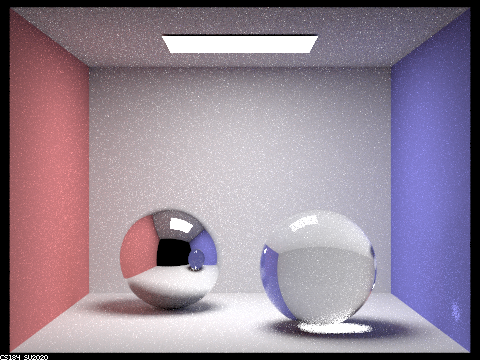
max_ray_depth = 4 |
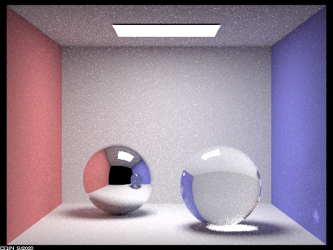
max_ray_depth = 5 |
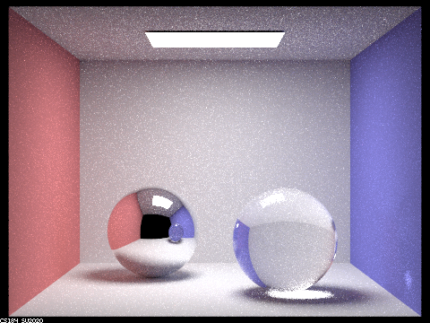
max_ray_depth = 100 |
Point out the new multibounce effects that appear in each image. Explain how these bounce numbers relate to the particular effects that appear.
max_ray_depth = 1, the direct lighting scene, and will continue to "lag" one bounce behind as we look through the proceeding images, since what we see from the viewport is the information from the bounce prior. Our refractive sphere (right) is still pretty dark; although the refracted rays can now leave the sphere and hit the light source, said rays are more likely to hit the walls behind the sphere due to the position of the light source above. Therefore, the majority of the lighting present is still from direct reflection and one bounce indirect reflection.max_ray_deph = 2 with how the ceiling is white and its neighboring sphere is still dark). The right sphere visible in the left sphere's reflection also has some indirect lighting (though this effect may be hard to see due to the size of the image: squint, and you can spot some red and white pixels reflected from the walls). The right sphere actually present in the scene's refracted light is now visible, as refracted rays can go from the viewport to the light source with 3 bounces now. The right sphere's reflected rays are most visible on its sides due to Fresnel's law. The ground under the right sphere is also bright now, as the rays that bounce to that part of the ground can enter the sphere and hit the light source with 3 bounces as well.Part 2: Microfacet Material
Implementation Overview
In this part, we implemented microfacets. Microfacet materials model surfaces with varying roughness values attached to them and how they respond to light. When light hits these types of materials, it tends to scatter in multiple directions due to small facets, or microfacets, on the surface of these materials that act as small mirrors that scatter light all about. Due to the high amount of computation that this could entail, we use statistics to approximate the results of this light scattering at a macro level.
To implement microfacets, we first wrote the BRDF based on the Cook-Torrance model. For this formula, we calculated (an approximation of) the Fresnel term, calculated the shadow-masking term, and then calculated the distribution of normals for our material and manipulated said terms as described in lecture. Finally, we implemented importance sampling to yield a less noisy render using less samples for our microfacet material.
Show a sequence of 4 images of scene CBdragon_microfacet_au.dae rendered with α set to 0.005, 0.05, 0.25 and 0.5. The other settings should be at least 128 samples per pixel and 1 samples per light. The number of bounces should be at least 5. (Note that, to change the α, just open the .dae file and search for microfacet.)
The following were rendered with 256 samples per pixel, 4 samples per light, and a max ray depth of 7.
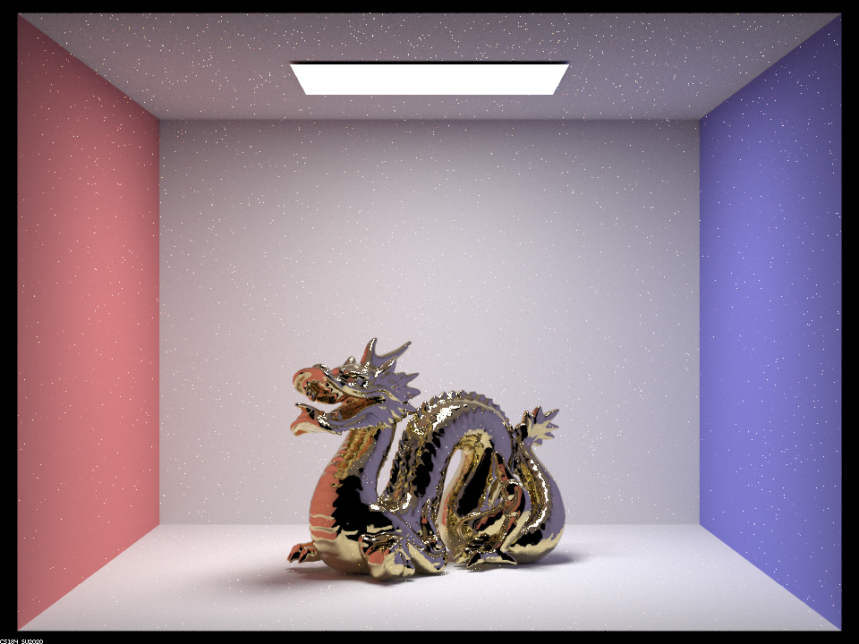
α = 0.005 |
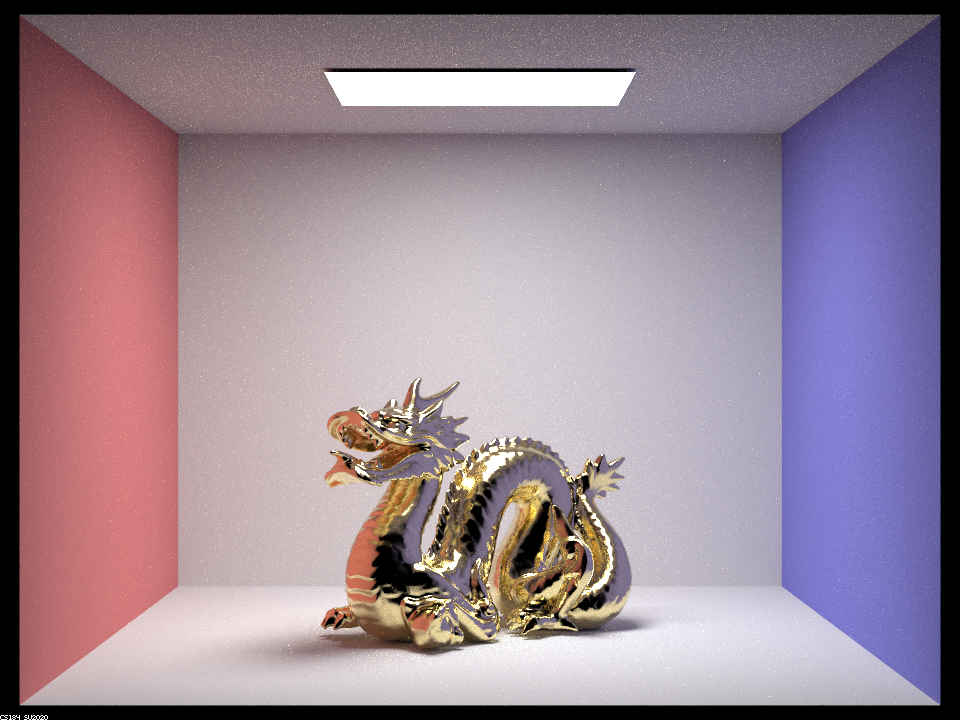
α = 0.05 |
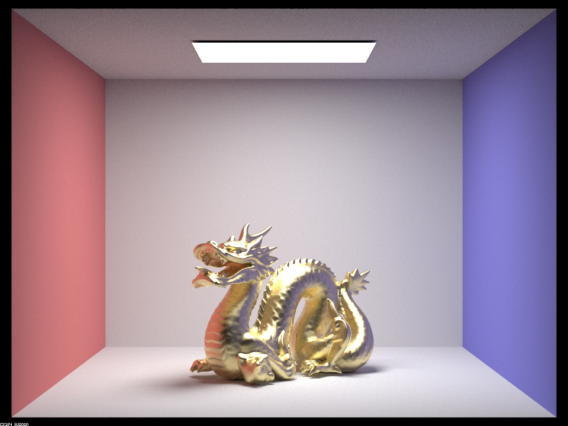
α = 0.25 |
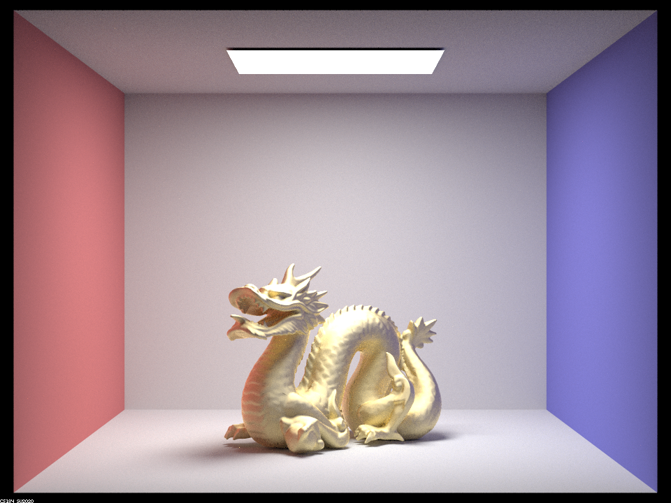
α = 0.5 |
Describe the differences between the different images.
Visually, we can see the dragon go from a more glossy look to a more matte finish as alpha increases. The dragon's surface looks rougher and rougher, the specular highlighting area becomes wider, and the visuals appear closer to the diffuse lighting. The reflections of the red, blue, and fourth wall (black, the void our camera/viewpoint is placed in) are especially prominent in the first two images and the fourth wall's darkness is nigh undetectible in the fourth image. This change from glossy to less glossy is expected considering α dictates how rough the macro surface of our object will be. In addition, when alpha is low, we see fireflies in the render. This is because the specular lighting is compressed at a small area instead of a spread-out one, resulting in a high amount of variance when picking bright bright rays.
Show two images of scene CBbunny_microfacet_cu.dae rendered using cosine hemisphere sampling (default) and your importance sampling. The sampling rate should be fixed at 64 samples per pixel and 1 sample per light. The number of bounces should be at least 5. Briefly discuss their difference.
The following were rendered with 64 samples per pixel, 1 sample per light, and a max ray depth of 7.
|
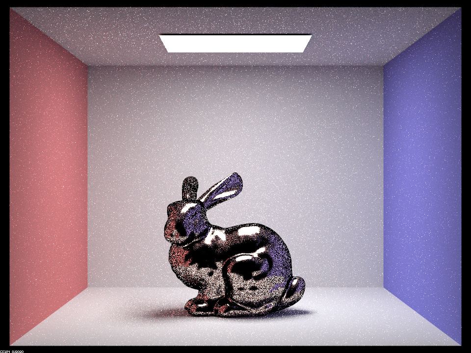
|
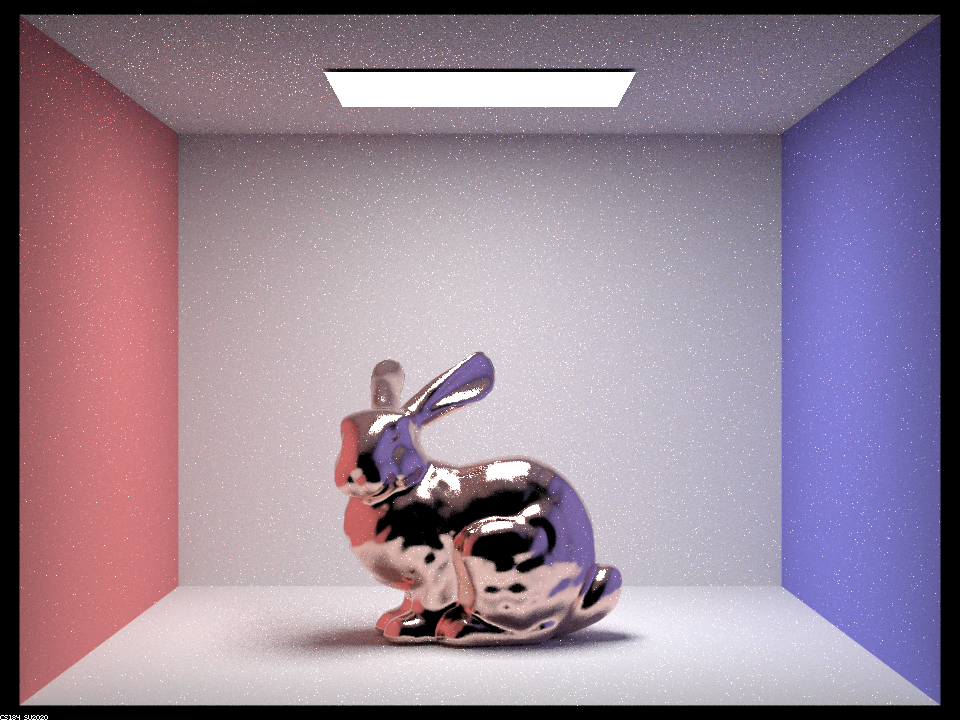
|
Breifly discuss the differences between the two images.
The rabbit rendered by cosine hemisphere sampling is generally darker and noiser than its importance sampling sibling. Especially notable is the black, almost cartoonish outline around the rabbit. This is due to specular lirghting being more prominent at a smaller area when the material is glossy, which our rabbit is. In importance sampling, we sample the direction where the specular lighting is more likely to happen according to our BRDF, resulting in a render that looks more natural with less noise.
Show at least one image with some other conductor material, replacing eta and k. Note that you should look up values for real data rather than modifying them arbitrarily. Tell us what kind of material your parameters correspond to
The following was rendered with 256 samples per pixel, 4 samples per light, and a max ray depth of 7. We used the following values for eta and k to create our nickel material: eta = 0.056909 0.054007 0.046878, k = 4.2543 3.4290 2.8028, alpha = 0.2.
|
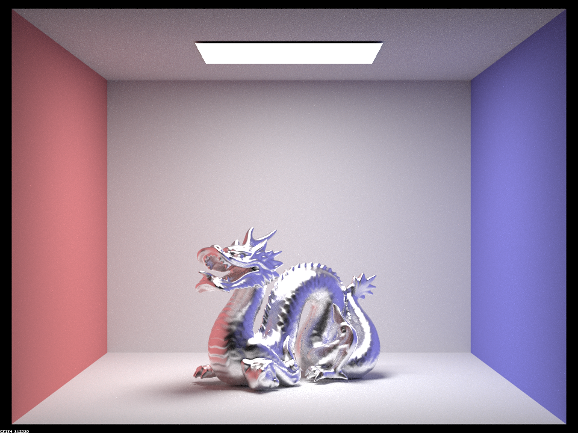
|
For references as to what nickel looks like (other than when it's used for the coin), for the potentially unaware reader:

|

|
{kind=link}
Partner Collaboration
Since the project with the staff solution wouldn't compile on Lena's M1 mac and the renders her computer yielded with the team's solutions from 3-1 were suspicious at best, all of the programming was done through William's computer which luckily ran everything fine. Thanks to CLion's collaboration feature, William wrote part 1 while Lena watched and commented, and Lena was able to write part 2 of this assignment on William's computer while William watched and commented through a janky pair programming setup that would freeze every two hours or so.
This writeup was written by Lena, who is making up for not sharing an equal burden on Project 3-1's workload, with content edits by William. Overall, collaboration went very smoothly and the project was completed very quickly (and accurately) before the beginning of spring break (though this writeup was completed much later).